Bearing and Seal Installation
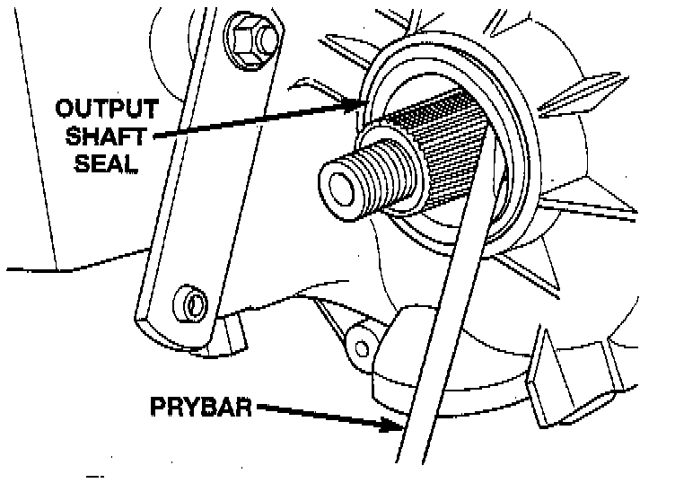
1. Remove front output shaft seal from front case with pry tool.
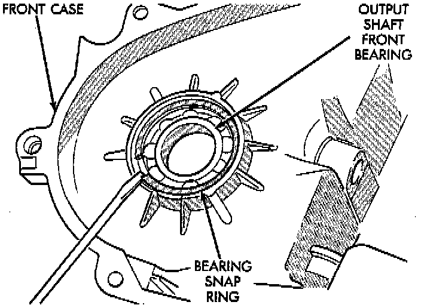
2. Remove snap-ring that retains front output shaft bearing in front case.
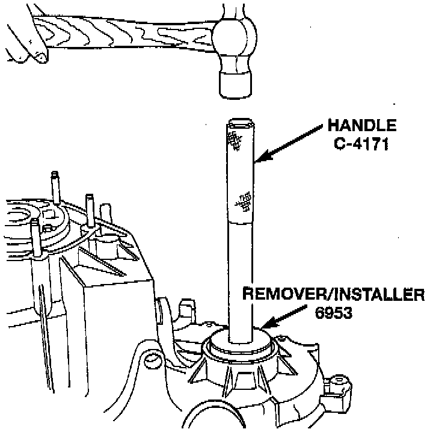
3. Using tool 6953, or equivalent, remove bearing from front case.
4. Using tool 6953, or equivalent, install new bearing.
5. Install snap-ring to hold bearing into case.
6. Install new front output seal in front case with Installer Tool 6952-A, or equivalent as follows:
a. Place new seal on tool. Garter spring on seal goes toward interior of case.
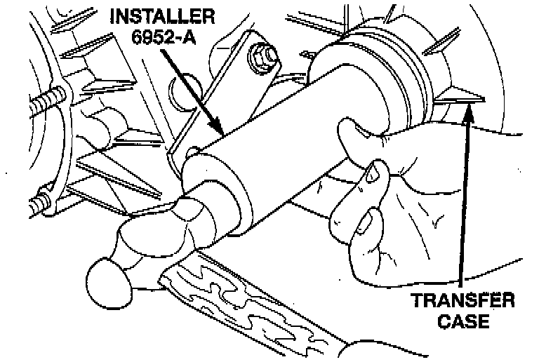
b. Start seal in bore with light taps from hammer. Once seal is started, continue tapping seal into bore until installer tool bottoms against case.
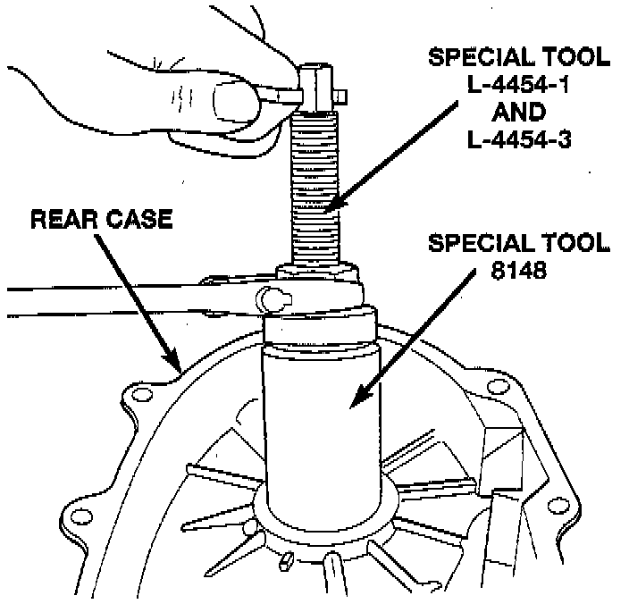
7. Remove the output shaft rear bearing with the screw and jaws from Remover L-4454 and Cup 8148, or equivalents.
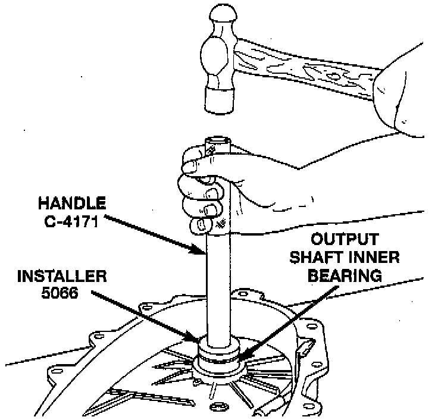
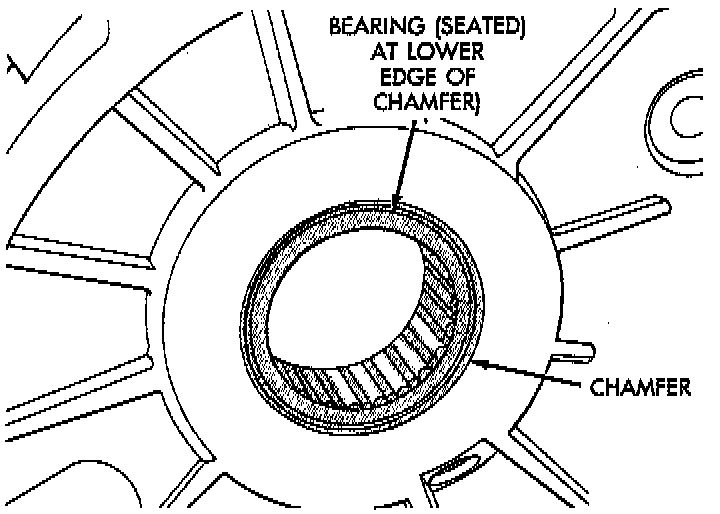
8. Install new bearing with Tool Handle C-4171 and Installer 5066, or equivalents. The bearing bore is chamfered at the top. Install the bearing so it is flush with the lower edge of this chamfer.
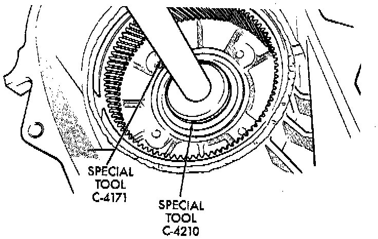
9. 5Using Remover C-4210 and Handle C-4171, or equivalents, drive input shaft bearing from inside the annulus gear opening in the case.
10. Install locating ring on new bearing.
11. Position case so forward end is facing upward.
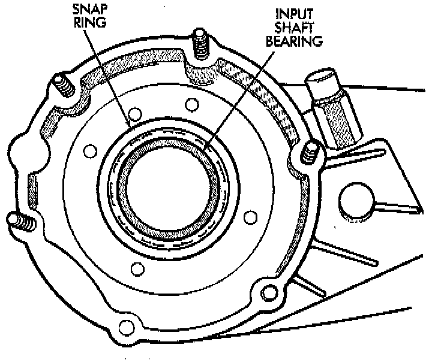
12. Using Remover C-4210 and Handle C-4171, drive input shaft bearing into case. The bearing locating ring must be fully seated against case surface.
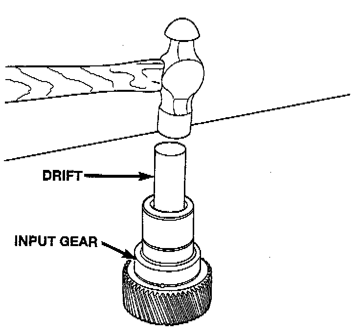
13. Remove input gear pilot bearing by inserting a suitably sized drift into the splined end of the input gear and driving the bearing out with the drift and a hammer.
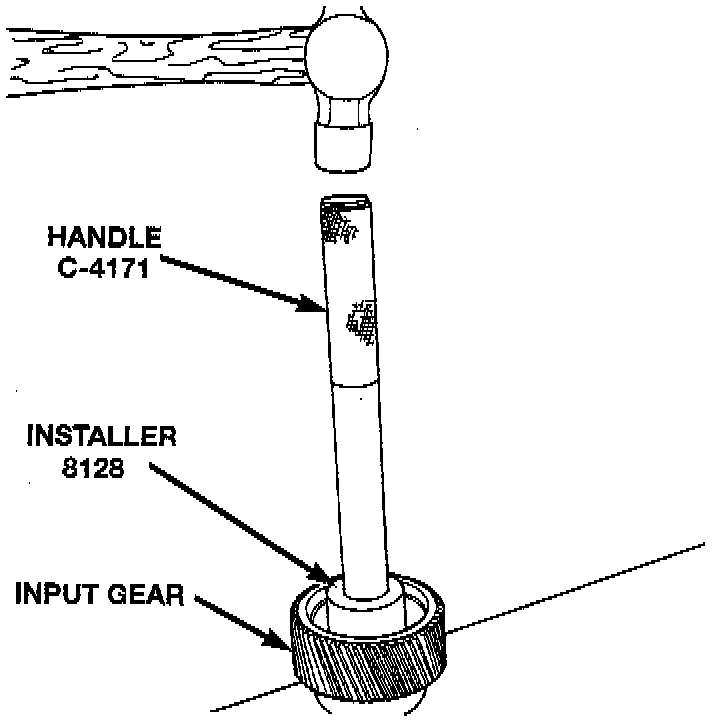
14. Install new pilot bearing with Installer 8128 and Handle C-4171, or equivalents.
15. Remove front bearing retainer seal with suitable pry tool.
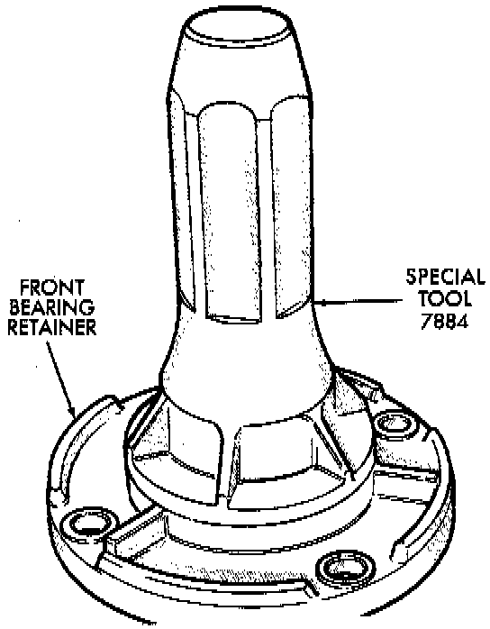
16. Install new front bearing retainer with Installer 7884, or equivalent.